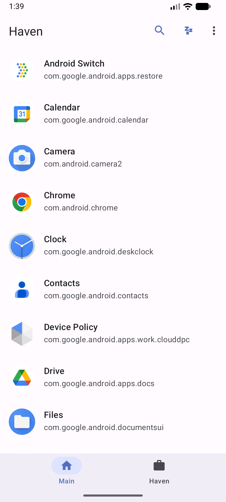
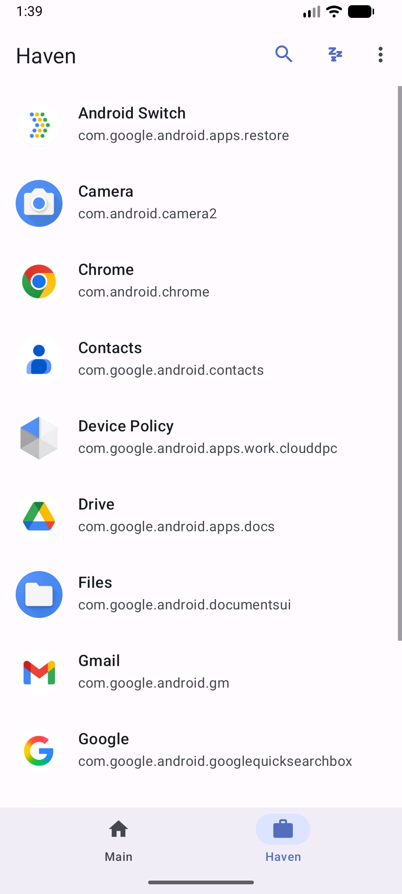

Set up a Work Profile
Use Android’s managed-profile provisioning flow. Haven becomes the profile manager for that space.
Android Work Profile · version 0.1.5
Haven gives Android’s Work Profile a clear, capable manager.
Install compatible apps in a separate profile, clone them across, and freeze the work-side copy when you need it quiet. Built for people who want their apps organized around Android’s own profile boundary.
Requires Android 7.0 (API 24) or newer and a device that supports managed profiles.


Work Profiles are an Android feature for separating managed apps and data from a personal profile.
Haven grew from the Shelter and Island lineage: keep that practical app-isolation workflow, then bring the Android build, compatibility work, and interface forward. Haven uses its own application ID, so it installs alongside other Work Profile managers.
How Android Work Profiles workHaven brings the managed-profile tasks together with a modern Android interface. Android and device support set the boundaries.
Use Android’s managed-profile provisioning flow. Haven becomes the profile manager for that space.
Install compatible apps inside the profile or create a work-side copy from the personal profile.
Freeze work-profile apps to stop them running or waking until you unfreeze them.
Create shortcuts to launch, unfreeze, or batch-freeze supported work apps.
Use Android’s Documents interface for cross-profile file handoff. The newer system picker is optional and off by default.
Edit supported, manifest-declared restrictions for apps installed in the Work Profile.
Some cross-profile widgets and connected experiences can be allowed for compatible apps. Their availability depends on Android and the apps involved.
Haven is the manager interface. Android’s Device Policy APIs provision the managed profile and enforce its platform-defined separation.
Haven asks Android to create a managed Work Profile and become its profile owner.
Use the Haven and Main tabs to see apps, install compatible copies, and choose work-profile actions.
Freeze selected work apps, or use Android’s document pickers when you intentionally move a file.
Boundary, not a promise. Profile separation depends on the Android implementation on your device. Haven does not guarantee protection from a compromised OS, vendor-specific bugs, or every form of data sharing.
This walkthrough takes you from the official APK to a work-side app. Keep the release note nearby if you are upgrading.
Use Android 7.0 (API 24) or newer, with managed Work Profiles supported by the device’s system software. Back up important data first.
Download the APK attached to Haven’s GitHub release. Android may ask you to allow installs from that source. Review the release notes and signing details before proceeding.
Upgrading from v0.1.4? Its APK has a different signing certificate. Uninstall v0.1.4 before installing v0.1.5; Android cannot update it in place. Remove the Work Profile first if Android requires it.
Open Haven and start Work Profile setup. Read the provisioning explanation, then accept Android’s system flow. Keep Haven installed in both the personal profile and its managed profile as setup completes.
Choose an app from the Main profile and use its clone action. Open the Haven tab to see the work-side copy, then launch it and confirm its data is separate from the personal copy.
Freeze a work app from its action menu and unfreeze it when you need it again. For cross-profile files, use the Android Documents UI. Haven’s optional system file picker is off by default.
Haven is an Android device-policy app, so its runtime and distribution requirements are shaped by both Android and the profile features it needs.
01 / Platform
02 / Permissions
QUERY_ALL_PACKAGES supports listing apps across profiles.MANAGE_EXTERNAL_STORAGE is associated with the current File Shuttle implementation.These permissions have distribution-policy implications. Review the current channel’s rules; the README specifically notes policy eligibility review for Google Play.
03 / Architecture
The setup flow requests a managed profile using Android’s provisioning intent. Device Policy APIs handle app visibility and profile-owner operations. Haven coordinates app lists, clone actions, freeze service, shortcuts, and document handoff.
It does not replace Android’s profile implementation or provide a separate OS.
04 / Identity
Package ID: io.github.kennethchoinfosec.haven. It is a separate app from Shelter and Island; existing app data, profile ownership, shortcuts, and permissions do not transfer.
Haven is licensed under GPLv3. The published v0.1.5 APK uses the new release key. See the release signing notes before upgrading older builds.
05 / Build and test
Install JDK 17, Android SDK Platform 37, and Android Build Tools 37.0.0 or newer.
./gradlew assembleDebug
./gradlew lintDebug
./gradlew testDebugUnitTestThe repository CI also builds Android regression tests. Release packaging requires the private signing properties described in the release guide; those credentials are not part of the source tree.
06 / Troubleshooting
Commands and requirements are based on the repository README, Gradle configuration, CI workflow, and release notes. Android builds were not run for this site update.
Compared with primary project and platform documentation checked on 31 October 2026. This table describes scope, not security rankings or benchmarks.
| Option | What it provides | A useful fit when | Considerations and license |
|---|---|---|---|
| Haven | Work Profile provisioning, app listing and cloning, freeze actions, shortcuts, optional cross-profile file tools, and supported managed restrictions. | You want a modernized, open-source manager UI for Android’s managed profile model. | Android 7.0+ and device support required. GPLv3. v0.1.5 needs uninstall before upgrading from v0.1.4 because the signing certificate changed. |
| Shelter | FOSS Work Profile app isolation, install or clone, and freezing. | You want Shelter’s established workflow and are comfortable with its current maintenance and support channels. | GPLv3. Its GitHub repository says it mirrors a Gitea project and directs bug reports to a mailing list; it describes the project as effectively in maintenance mode. |
| Island | Work Profile app isolation, cloning, freezing, hiding, and other profile-oriented controls listed by its publisher. | You prefer its published Android app and feature set. | Its linked source is the Google Play listing. Check the current terms, supported Android versions, and distribution details there; this comparison does not infer a license. |
| Android Work Profile | The platform capability that separates work and personal app/data spaces on supported devices. | You use a device or organization that already manages a Work Profile. | It is an Android platform feature, not a standalone consumer manager app. Available controls and behavior depend on Android and device policy. |
No. Haven manages Android’s Work Profile using device policy APIs. The Android OS provides the profile boundary.
Haven uses a different app ID and installs separately. It does not transfer profile ownership, app data, shortcuts, or permissions from another manager.
No. Haven uses profile app visibility controls to freeze a work-side app. You can unfreeze it from Haven when you want it available again.
The repository flags package discovery and broad storage access as permissions that need policy eligibility review for Google Play. Check current Play policy and the app’s implementation before distributing it there.
Keep the project moving
Haven’s code, releases, and issue tracker are public. Include your Android version and device details when reporting setup or compatibility problems, and remove personal information from logs.